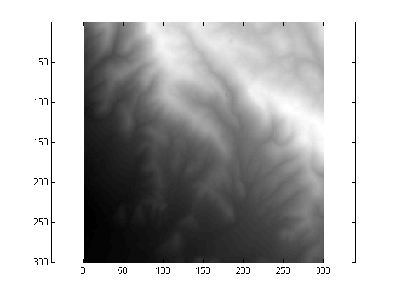
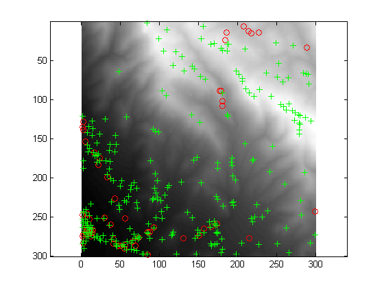
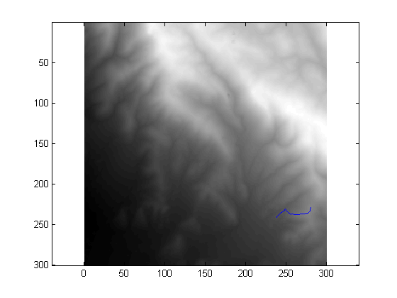
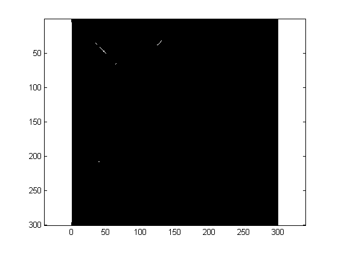
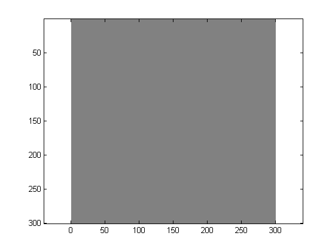

Contents
clear all; close all;
load elevation.mat
cmap = map;
imagesc(cmap); axis equal; colormap gray;

Finding pits
pits = findpits(cmap);
peaks = findpits(-cmap);
[num_pits,pitc] = size(pits);
[num_peaks,peakc] = size(peaks);
num_pits
num_peaks
imagesc(cmap); colormap(gray); axis equal
hold on
plot(pits(:,2),pits(:,1),'ro');
plot(peaks(:,2),peaks(:,1),'g+');
hold off
num_pits =
57
num_peaks =
273

Path to high ground
path = findpath(cmap);
imagesc(cmap); colormap(gray); axis equal
hold on
plot(path(:,2),path(:,1),'b-');
hold off

Finding rivers
rivers = flow(cmap);
Flow greater than 500
imagesc(rivers > 500); axis equal; colormap gray;

Flow greater than 2000
imagesc(rivers > 2000); axis equal; colormap gray;
